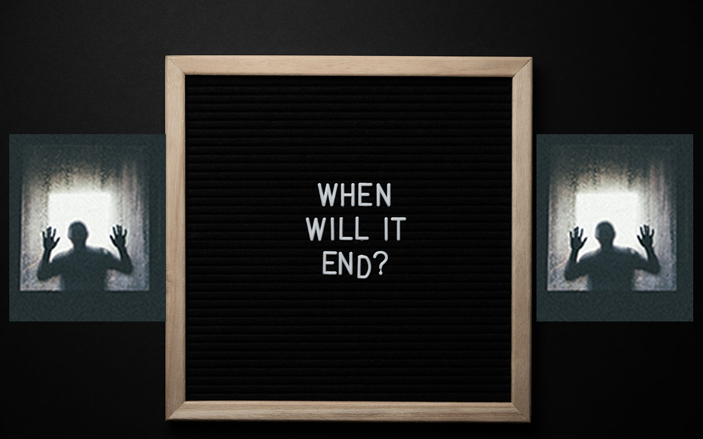

The first day of the class, I remember no kids were talking to me, in their mind, they would think it was a joke, but in my perspective, it gives me a lot of stress similar to putting you in a very big case where you cannot talk to anyone, even if you see someone, however, people will ignore you and do their stuff. I felt I was trapped in the cage like a bird, desperation hitting like a wave into my brain. After a week ago, I stop any kind of effort and just focus on my world, rejecting to talk to outside because I considered the outer world was dangerous to me. Also, my parents didn't discover these things because I don't want them to know what I was facing in school, they were tired every day from work, so I decided to not share my sadness with them.
